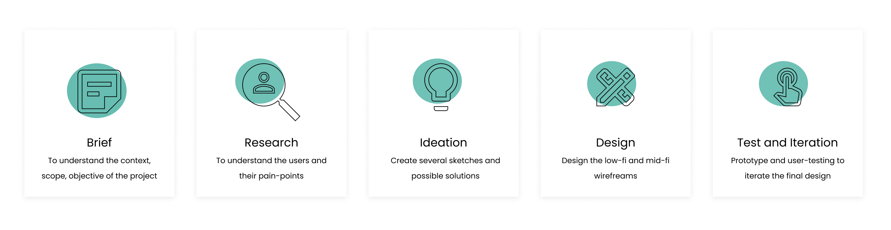
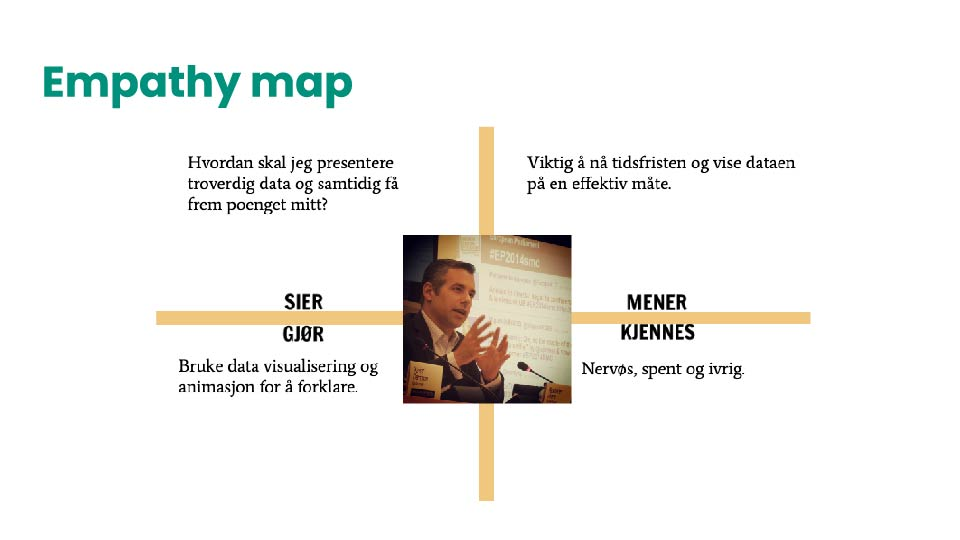
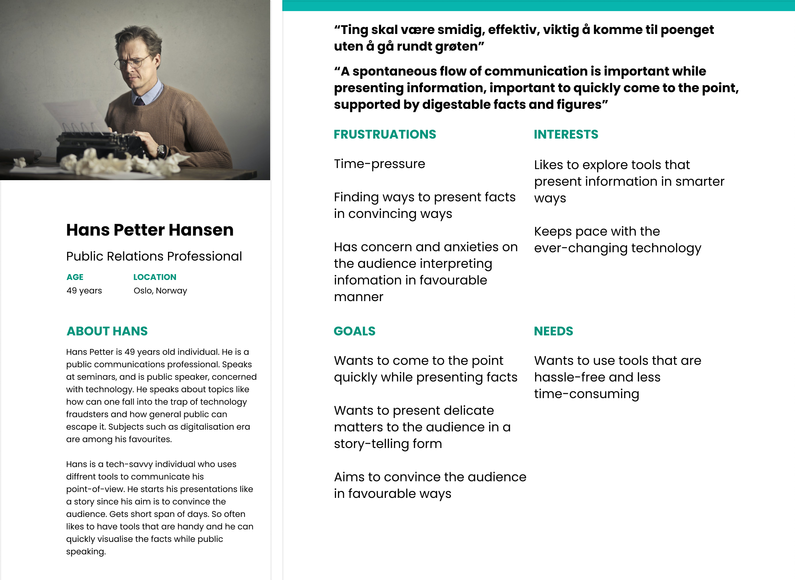

Åpenhet: Data Visualisation Project
OVERVIEW:
‘Åpenhet’, a Norwegian company, approached us through the university with an intriguing design challenge. In Norwegian, Åpenhet is pronounced as ‘Openhet’. The Å becomes O in English. It means ‘openness’ in English.
Åpenhet is a Norwegian company that develops a number of tools for its clients where they can develop their own data management platform to visualise data, make cross-factor comparisons, or survey collection, and more.
THE GOAL
The design challenge assigned to us was: To design an interactive information website to showcase development of Serbia’s public sector from 2017 to 2019 through visualisations for a Norway-based client, Åpenhet.
In this design challenge, we were supposed to figure out who are the user-personas of the product or information website. As well as, how can one design a tool where complex information like that of the public sector be visualised and presented in an easy-to-digest manner.
The design challenge was divided into 2 parts:
Design Question 1: How to define the design challenge given by the client and who are the right set of user-personas?
Design Question 2: How to present complex information to the public sector that is meaningful and resourceful?
TEAM:
I worked in an amazing team of four. I was actively involved in all phases of the project- from research, user-personas, to map out the problem to deliver the final designs.
MY ROLE:
Qualitative Research, UX Design, Visual Design, Prototyping and Testing
Process:
My process has always varied in different projects and is determined by many factors such as the project goals, business needs, complexity of the problem, time and etc. Here I’ll describe my process for solving this problem.
1. Brief:
This was the brainstorming phase, session with the client to understand the user-personas, competitors, user-journey, and the overall vision of the client.
2. Research:
DEFINE THE USER
Understanding the Why with User Research
Through the support of my team, I was involved in brainstorming, finding out who the users are, how to divide them, to identify their pain points, opportunity and insights.
Due to complexity and wide-range of users, the process was simplified by dividing the users into 2 groups:
Primary group (age 45 to 59 years): Diplomats/Public Relation professionals, professionals from EU Commision, and lobbyists. Their aim is to convince their audiences who are the journalists and the general public. They want to convince the mentioned audiences about the reports of the country they present. They’re the main audience who might want to potentially use the presentation tool of the client.
Secondary group: The Journalists and mass media professionals act as a medium for the primary group to transmit the engaging and easy-to-digest information that they interpret.
Tertiary group: General folk and the citizens of the country and international public for whom the public policies are made accessible and the processes are made transparent.
The user-persona interviews were sent to the primary group- PR communication professionals.
Analysis:
PRIMARY GROUP
Analysis of the user-interview of the primary group revealed that people working as diplomats and lobbyists often need to deliver presentations. These presentations are about public healthcare reports, governance, etc. at the international level. Their audiences are journalists and the general public whom they want to convince about the credibility of the reports and facts and figures. This primary group prefers to show facts in infographic forms.
To get a clearer understanding of the primary users empathy map model was used. With this tool, I learnt to have a deeper understanding of different stages of what the user might feel, think, say, and do during the time of using the presentation tool. Used ‘lobbyist’ as a user-persona.
The challenge was: to define the problem, user-personas, and the customer journey.
I always involved facts and figures, quantifiable or qualitative data when I’m working to design prototypes. So, in order to get a deeper understanding of my user-personas, I used a research paper by Chisnell and Redish called Audience-Centered Heuristics: Older Adults. This carries heuristics on parameters to consider while designing websites for older adults. I learnt it is also useful to consider the color blindness factor for the user-personas when it comes to data visualisations.
The tools like empathy model, interviewing user-personas, and the use of research papers enabled us as a team to define the primary user-persona. We learnt that targeting first on the primary user-persona might also enable us to reach the secondary group as well.
SECONDARY GROUP
The journalists prefer to use data visualisations to create engaging and appealing news stories. They feel infographics occupy less space, showing large amounts of data at one go. They believe in information that is transparent, based on facts and figures. They are more prone to the general public.
TERTIARY GROUP
This is the general public of the country, varying in different age-groups. They want to know how the country is progressing, what public policies are diplomats going to make. This group majorly believes in democracy and transparency.
PRIMARY USER-PERSONA:
KEY FINDINGS:
ANSWER TO DESIGN QUESTION 1: How to define the design challenge given by the client and who are the right set of user-personas?
Primary group findings: We found out the needs of our primary user-personas. The audience of the primary group are the general public. The medium is journalists and media professionals. They get 4 days to make presentations. Prefer presentations in the form of visualisations so that they can convince their audience in an engaging and favourable manner.
Secondary group findings: They are journalists who get 3 to 4 hours to prepare news stories. Since they don’t want their news to be edited too much and reduced, they prefer visualisations.
Tertiary group findings: The general public is very conscious of their environment, concerned about what government is doing to make the policies that are favourable for them, at individual level and national level. They prefer transparency and credible facts.
CONCEPT DESCRIPTION:
ANSWER TO DESIGN QUESTION 2: How to present complex information to the public sector that is meaningful and resourceful?
Forming the concept was answer to 2nd design question.
Our concept was: To prototype a personalised and optimized information presentation tool, for its primary user-personas where they can showcase data in an engaging and easy-to-digest way.
The color-scheme and navigation was formed to consider the following factors:
- Color-blind people are able to visualise through colors
- The users with eye-sight challenges are able to understand information
- Easy to navigate tool
- Information is divided and presented in digestible and engaging way
3. Ideation:
Once the research phase was completed, we worked with sketches to find out and prioritise the possible solutions.
- The users wanted to see more of the value of the public report
- They wanted to be able to see analysis and get the essence of the public sector
- Wanted more colorful visualisations
- Experienced navigation problems
4. Design:
Once the ideation phase was completed and prioritised the key features, we worked on the low-fi wireframes.
We had a list of screens to cover all scenarios so I started to do grayscale wireframes to detail out the flows. In this step, I also made a mid-fidelity prototype to test the idea with users and fix the problems in the early stage.
MID-FI WIREFRAMES:

5. Test and Iteration:
USER-TESTING:
While the hi-fi of the prototype was in the making, I sent the first-version of the prototype for user-testing. A few of the findings were that users wanted to see more information in an analytical and engaging manner.
PROTOTYPE BEFORE ITERATIONS

I went back and forth throughout phase while I was iterating. The best way for me to visualise stuff is with sketches. So I sketched out the possibilities again.
Changes made after user-testing:
- Changed the colors to make the visual interface look engaging
- Made the navigation easy
- Summarised public sector in the form of radar chart, bar graphs, etc.


My Learnings:
Color contrasts were chosen carefully for clarity so that they’re stark enough to make distinguishes between different visual elements
The colors enable color deficient people to view and understand the report
Colors are encoded and explained
Navigation is made easy
The green color of client’s brand is balanced with that of the prototype
Complex information is now digestible and engaging
Results: How client used the design?
The client used the prototype as inspiration to design a presentation tool
Experience the product yourself here!